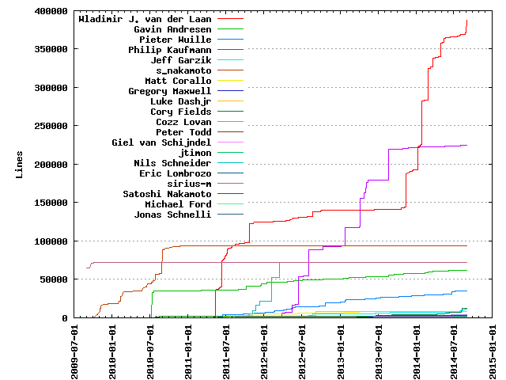
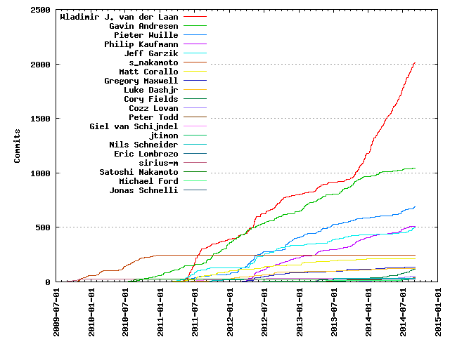

Authors
| Author | Commits (%) | + lines | - lines | First commit | Last commit | Age | Active days | # by commits |
|---|
| Wladimir J. van der Laan | 2011 (30.19%) | 387752 | 361085 | 2011-05-08 | 2014-09-04 | 1214 days, 20:15:51 | 632 | 1 |
| Gavin Andresen | 1043 (15.66%) | 62060 | 75925 | 2010-07-14 | 2014-08-20 | 1497 days, 1:53:06 | 475 | 2 |
| Pieter Wuille | 691 (10.37%) | 35359 | 22285 | 2011-03-18 | 2014-09-04 | 1265 days, 21:02:11 | 363 | 3 |
| Philip Kaufmann | 512 (7.69%) | 224933 | 114803 | 2012-03-17 | 2014-08-29 | 894 days, 21:08:50 | 271 | 4 |
| Jeff Garzik | 495 (7.43%) | 11014 | 7168 | 2011-03-09 | 2014-08-30 | 1269 days, 20:41:16 | 215 | 5 |
| s_nakamoto | 245 (3.68%) | 93967 | 75303 | 2009-10-21 | 2010-12-16 | 420 days, 21:35:46 | 107 | 6 |
| Matt Corallo | 214 (3.21%) | 8580 | 2909 | 2011-03-05 | 2014-08-10 | 1253 days, 13:25:15 | 134 | 7 |
| Gregory Maxwell | 136 (2.04%) | 608 | 501 | 2012-02-02 | 2014-07-21 | 900 days, 8:54:01 | 103 | 8 |
| Luke Dashjr | 125 (1.88%) | 8502 | 6313 | 2011-01-29 | 2014-07-07 | 1255 days, 20:03:28 | 83 | 9 |
| Cory Fields | 118 (1.77%) | 12574 | 3329 | 2013-05-27 | 2014-08-27 | 457 days, 13:52:00 | 55 | 10 |
| Cozz Lovan | 54 (0.81%) | 4252 | 642 | 2013-06-11 | 2014-08-18 | 432 days, 18:44:30 | 45 | 11 |
| Peter Todd | 36 (0.54%) | 925 | 218 | 2012-04-29 | 2014-08-25 | 848 days, 4:47:24 | 23 | 12 |
| Giel van Schijndel | 34 (0.51%) | 1043 | 672 | 2011-06-25 | 2012-07-09 | 380 days, 3:55:21 | 13 | 13 |
| jtimon | 32 (0.48%) | 436 | 420 | 2014-03-08 | 2014-08-30 | 174 days, 18:53:11 | 17 | 14 |
| Nils Schneider | 29 (0.44%) | 72416 | 30001 | 2011-06-04 | 2012-06-03 | 365 days, 7:15:55 | 17 | 15 |
| Eric Lombrozo | 27 (0.41%) | 2639 | 1629 | 2013-01-06 | 2013-06-25 | 169 days, 3:40:15 | 10 | 16 |
| sirius-m | 26 (0.39%) | 72018 | 5126 | 2009-08-30 | 2010-02-04 | 158 days, 11:45:07 | 10 | 17 |
| Satoshi Nakamoto | 26 (0.39%) | 2332 | 978 | 2010-07-27 | 2010-08-28 | 32 days, 7:15:45 | 10 | 18 |
| Michael Ford | 24 (0.36%) | 537 | 67 | 2012-02-28 | 2014-08-20 | 903 days, 23:28:17 | 19 | 19 |
| Jonas Schnelli | 24 (0.36%) | 2130 | 805 | 2013-04-02 | 2013-08-31 | 150 days, 7:03:57 | 15 | 20 |
These didn't make it to the top: R E Broadley, Chris Moore, tcatm, gavinandresen, fanquake, Micha, JaSK, Kamil Domanski, xanatos, super3, Warren Togami, Tom Harding, Ricardo M. Correia, Mike Hearn, Han Lin Yap, Josh Triplett, Jordan Lewis, --author=Satoshi Nakamoto, freewil, Forrest Voight, Drak, Christian von Roques, p2k, Vegard Nossum, Rune K. Svendsen, Otto Allmendinger, Matt Giuca, Janne Pulkkinen, Guillermo Céspedes Tabárez, Celil, sje397, paveljanik, fcicq, Vinnie Falco, Roy Badami, Roman Mindalev, Robert Backhaus, Michael Hendricks, Federico Bond, Doug Huff, Daniel Kraft, Ashley Holman, Andreas Schildbach, Alexander Kjeldaas, theuni, kjj2, gubatron, grimd34th, globalcitizen, devrandom, Venkatesh Srinivas, Michagogo, Michael Bemmerl, John Maguire, Jay Weisskopf, Huang Le, Fordy, Eric Hosmer, Dev Random, David Joel Schwartz, Chris, Brandon Dahler, Alex B, randy-waterhouse, ntrgn, cjdelisle, Zak Wilcox, Whit J, Thomas Holenstein, Ross Nicoll, Mark Friedenbach, Manuel Araoz, Lake Denman, Johnathan Corgan, Daniel Folkinshteyn, Alex Morcos, shshshsh, phelixbtc, patrick s, kazcw, harry, ditto-b, daniel, constantined, coderrr, cardpuncher, Witchspace, Trevin Hofmann, Timothy Redaelli, Stéphane Gimenez, Scott Howard, Scott Ellis, Richard Schwab, Marius Hanne, Kosta Zertsekel, Kangmo, Josh Lehan, JoelKatz, Haakon Nilsen, Giuseppe Mazzotta, Fabian Raetz, Dylan Noblesmith, Dwayne C. Litzenberger, Dominyk Tiller, Dean Lee, Dawid Spiechowicz, David Perry, David Hill, David FRANCOIS, Daniel Larimer, Colin Dean, Clark Gaebel, Christopher Latham, Chris Howie, Chris Beams, Carlo Alberto Ferraris, Andrey, Andrew Poelstra, Alon Muroch, Alex Waters, Alex, xHire, vhf / victor felder, tucenaber, tm314159, sje, sandos, sandakersmann, rxl, richierichrawr, regergregregerrge, redshark1802, pryds, philsong, phantomcircuit, peryaudo, ovdeathiam, osmosis, olalonde, ojab, nomnombtc, mewantsbitcoins, mb300sd, mark, m0ray, laszloh, langerhans, kwaaak, kevin, justmoon, graingert, gmaxwell, gladoscc, gjs278, flower, elkingtowa, elichai, duanemoody, dllud, default, dabaopku, coblee, celil-kj, burger2, bitsofproof, b6393ce9-d324-4fe1-996b-acf82dbc3d53, ariel, Yoichi Hirai, Wladimir van der Laan, William Yager, Wil Bown, Virgil Dupras, Victor Leschuk, Vaclav Vobornik, Torstein Husebø, Timothy Stranex, Timon Rapp, Thomas Zander, Telepatheic, Tawanda Kembo, Tariq Bashir, Tamas Blummer, Sven Slootweg, Subo1978, Stuart Cardall, Stephane Glondu, Sined, Simon de la Rouviere, Shawn Wilkinson, Shane Wegner, Sergey Kazenyuk, Scott Willeke, Santiago M. Mola, Sanjay Ghemawat, Ryan Niebur, Rune K Svendsen, Rubén Darío Ponticelli, Ruben Dario Ponticelli, Rose Toomey, Rav3nPL, Pierre Pronchery, Petter Reinholdtsen, Pavel Vasin, Patrick Varilly, Patrick Strateman, Patrick Brown, Olivier Langlois, Noel Tiernan, Nick Bosma, Misbakh-Soloviev Vadim A, Mike Cassano, Mikael Wikman, Midnight Magic, Michal Zima, Michael Bauer, Michael, Meeh, Matthew Bogosian, Mathy Vanvoorden, LongShao007, Lars Rasmusson, Larry Gilbert, Khalahan, Julian Langschaedel, Julian Haight, Johannes Henninger, Joerie de Gram, Joel Kaartinen, Jeroenz0r, Jaromil, James Burkle, Jakob Kramer, Isidoro Ghezzi, Ian Kelling, Ian Carroll, HostFat, Hector Jusforgues, HaltingState, Florin, Federico Faggiano, Fabian H jr., Eric Swanson, Eric S. Bullington, ENikS, Douglas Huff, Doug, Dmitry Smirnov, Derek701, David Serrano, David Grogan, David Griffith, David A. Harding, Danube, Daniel Newton, Daniel Holbert, Dan Loewenherz, Dan Helfman, Clinton Christian, Chuck LeDuc Díaz, Chuck, Christian Decker, Carlos Pizarro, Calvin Tam, Calvin Owens, Bryan Bishop, Blitzboom, Ben Holden-Crowther, Bardi Harborow, Arnav Singh, Anonymous, Ang Iong Chun, Andrey Alekseenko, Andrea D'Amore, Amir Yalon, Altoidnerd, Alistair Buxton, Aitor Pazos, Addy Yeow, Abraham Jewowich, APerson241
Only top 20 authors shown
Only top 20 authors shown
| Month | Author | Commits (%) | Next top 5 | Number of authors |
|---|
| 2014-09 | Wladimir J. van der Laan | 7 (46.67% of 15) | Pieter Wuille, ENikS | 3 |
| 2014-08 | Wladimir J. van der Laan | 106 (46.29% of 229) | Jeff Garzik, Cory Fields, Pieter Wuille, Philip Kaufmann, jtimon | 22 |
| 2014-07 | Wladimir J. van der Laan | 128 (52.89% of 242) | Pieter Wuille, Jeff Garzik, Cozz Lovan, Gavin Andresen, Philip Kaufmann | 32 |
| 2014-06 | Wladimir J. van der Laan | 126 (45.99% of 274) | Philip Kaufmann, Cory Fields, Pieter Wuille, Jeff Garzik, jtimon | 30 |
| 2014-05 | Wladimir J. van der Laan | 88 (49.72% of 177) | Pieter Wuille, Philip Kaufmann, Kamil Domanski, Cory Fields, Gavin Andresen | 28 |
| 2014-04 | Wladimir J. van der Laan | 72 (54.14% of 133) | Pieter Wuille, JaSK, Gregory Maxwell, Cory Fields, Philip Kaufmann | 27 |
| 2014-03 | Wladimir J. van der Laan | 88 (46.32% of 190) | Gavin Andresen, jtimon, Cozz Lovan, Peter Todd, Cory Fields | 39 |
| 2014-02 | Wladimir J. van der Laan | 76 (50.67% of 150) | Gavin Andresen, Philip Kaufmann, Cozz Lovan, Jeff Garzik, Pieter Wuille | 23 |
| 2014-01 | Wladimir J. van der Laan | 135 (67.50% of 200) | Philip Kaufmann, Cozz Lovan, Pieter Wuille, Gavin Andresen, Micha | 19 |
| 2013-12 | Wladimir J. van der Laan | 92 (56.44% of 163) | Philip Kaufmann, Gavin Andresen, Cory Fields, Pieter Wuille, Thomas Holenstein | 17 |
| 2013-11 | Wladimir J. van der Laan | 81 (48.80% of 166) | Gavin Andresen, Philip Kaufmann, Pieter Wuille, Josh Triplett, Guillermo Céspedes Tabárez | 20 |
| 2013-10 | Wladimir J. van der Laan | 64 (29.09% of 220) | Gavin Andresen, Philip Kaufmann, Pieter Wuille, Matt Corallo, Jeff Garzik | 18 |
| 2013-09 | Gavin Andresen | 21 (18.58% of 113) | Wladimir J. van der Laan, Cory Fields, Pieter Wuille, Luke Dashjr, Philip Kaufmann | 14 |
| 2013-08 | Gavin Andresen | 42 (35.29% of 119) | Jeff Garzik, Wladimir J. van der Laan, Pieter Wuille, Philip Kaufmann, Gregory Maxwell | 19 |
| 2013-07 | Pieter Wuille | 12 (17.91% of 67) | Jeff Garzik, Gavin Andresen, Philip Kaufmann, Peter Todd, Wladimir J. van der Laan | 17 |
| 2013-06 | Pieter Wuille | 24 (25.00% of 96) | Jeff Garzik, Eric Lombrozo, Wladimir J. van der Laan, Philip Kaufmann, Gavin Andresen | 19 |
| 2013-05 | Gavin Andresen | 31 (23.31% of 133) | Pieter Wuille, Wladimir J. van der Laan, Jeff Garzik, Cory Fields, Philip Kaufmann | 23 |
| 2013-04 | Wladimir J. van der Laan | 48 (27.43% of 175) | Philip Kaufmann, Pieter Wuille, Gavin Andresen, Jonas Schnelli, Michael Ford | 17 |
| 2013-03 | Wladimir J. van der Laan | 18 (24.00% of 75) | Gavin Andresen, Pieter Wuille, Philip Kaufmann, Matt Corallo, Roman Mindalev | 15 |
| 2013-02 | Gavin Andresen | 29 (43.28% of 67) | Wladimir J. van der Laan, Pieter Wuille, Philip Kaufmann, Jeff Garzik, Peter Todd | 15 |
| 2013-01 | Gavin Andresen | 49 (34.27% of 143) | Pieter Wuille, Philip Kaufmann, Wladimir J. van der Laan, Eric Lombrozo, Matt Corallo | 13 |
| 2012-12 | Pieter Wuille | 33 (38.82% of 85) | Gavin Andresen, Philip Kaufmann, Wladimir J. van der Laan, Forrest Voight, Colin Dean | 17 |
| 2012-11 | Pieter Wuille | 32 (34.04% of 94) | Philip Kaufmann, Jeff Garzik, Wladimir J. van der Laan, Alexander Kjeldaas, Gavin Andresen | 15 |
| 2012-10 | Pieter Wuille | 33 (27.97% of 118) | Wladimir J. van der Laan, Gavin Andresen, Philip Kaufmann, Jeff Garzik, Gregory Maxwell | 12 |
| 2012-09 | Wladimir J. van der Laan | 51 (31.68% of 161) | Gavin Andresen, Jeff Garzik, Philip Kaufmann, Pieter Wuille, Luke Dashjr | 15 |
| 2012-08 | Wladimir J. van der Laan | 39 (21.67% of 180) | Jeff Garzik, Philip Kaufmann, Matt Corallo, Gavin Andresen, Pieter Wuille | 13 |
| 2012-07 | Wladimir J. van der Laan | 32 (23.70% of 135) | Philip Kaufmann, Gavin Andresen, Jeff Garzik, Matt Corallo, Luke Dashjr | 16 |
| 2012-06 | Wladimir J. van der Laan | 29 (16.76% of 173) | Gavin Andresen, Pieter Wuille, Philip Kaufmann, Jeff Garzik, Matt Corallo | 19 |
| 2012-05 | Wladimir J. van der Laan | 97 (27.17% of 357) | Jeff Garzik, Philip Kaufmann, Pieter Wuille, Gregory Maxwell, Gavin Andresen | 15 |
| 2012-04 | Pieter Wuille | 55 (25.23% of 218) | Wladimir J. van der Laan, Gavin Andresen, Jeff Garzik, Philip Kaufmann, Gregory Maxwell | 16 |
| 2012-03 | Gavin Andresen | 33 (27.27% of 121) | Wladimir J. van der Laan, Pieter Wuille, Philip Kaufmann, Matt Corallo, Gregory Maxwell | 15 |
| 2012-02 | Pieter Wuille | 44 (29.53% of 149) | Gavin Andresen, Wladimir J. van der Laan, Luke Dashjr, Matt Corallo, sje397 | 12 |
| 2012-01 | Gavin Andresen | 38 (50.00% of 76) | Pieter Wuille, Wladimir J. van der Laan, Luke Dashjr, Matt Corallo, Forrest Voight | 11 |
| 2011-12 | Gavin Andresen | 46 (52.87% of 87) | Matt Corallo, Wladimir J. van der Laan, Luke Dashjr, Nils Schneider, Pieter Wuille | 7 |
| 2011-11 | Gavin Andresen | 32 (37.21% of 86) | Wladimir J. van der Laan, Nils Schneider, Luke Dashjr, Pieter Wuille, Michael Hendricks | 15 |
| 2011-10 | Gavin Andresen | 41 (43.16% of 95) | Matt Corallo, Wladimir J. van der Laan, Luke Dashjr, globalcitizen, Nils Schneider | 14 |
| 2011-09 | Gavin Andresen | 56 (36.84% of 152) | Wladimir J. van der Laan, Jeff Garzik, Matt Corallo, Nils Schneider, Pieter Wuille | 17 |
| 2011-08 | Wladimir J. van der Laan | 32 (34.78% of 92) | Gavin Andresen, Giel van Schijndel, Matt Corallo, Jeff Garzik, Dev Random | 19 |
| 2011-07 | Wladimir J. van der Laan | 123 (51.46% of 239) | Jeff Garzik, Matt Corallo, Pieter Wuille, Gavin Andresen, Celil | 19 |
| 2011-06 | Wladimir J. van der Laan | 107 (57.22% of 187) | Jeff Garzik, Pieter Wuille, Giel van Schijndel, Matt Corallo, Gavin Andresen | 19 |
| 2011-05 | Wladimir J. van der Laan | 48 (30.19% of 159) | Jeff Garzik, Pieter Wuille, Gavin Andresen, Matt Corallo, Jordan Lewis | 26 |
| 2011-04 | Gavin Andresen | 18 (40.91% of 44) | Jeff Garzik, Pieter Wuille, devrandom, Ricardo M. Correia, Matt Corallo | 13 |
| 2011-03 | Gavin Andresen | 17 (36.96% of 46) | tcatm, Jeff Garzik, Matt Corallo, Pieter Wuille, Sven Slootweg | 8 |
| 2011-02 | Gavin Andresen | 13 (41.94% of 31) | tcatm, Matt Giuca, devrandom, sandos, David FRANCOIS | 7 |
| 2011-01 | Gavin Andresen | 25 (58.14% of 43) | Chris Moore, Chris, Marius Hanne, tcatm, ojab | 8 |
| 2010-12 | Gavin Andresen | 13 (46.43% of 28) | s_nakamoto, gavinandresen, Witchspace | 4 |
| 2010-11 | s_nakamoto | 11 (36.67% of 30) | Gavin Andresen, gavinandresen | 3 |
| 2010-10 | Gavin Andresen | 13 (44.83% of 29) | s_nakamoto, gavinandresen | 3 |
| 2010-09 | s_nakamoto | 21 (61.76% of 34) | Gavin Andresen | 2 |
| 2010-08 | s_nakamoto | 25 (49.02% of 51) | Satoshi Nakamoto, laszloh, Gavin Andresen | 4 |
| 2010-07 | s_nakamoto | 30 (62.50% of 48) | Gavin Andresen, --author=Satoshi Nakamoto, Satoshi Nakamoto | 4 |
| 2010-06 | s_nakamoto | 32 (100.00% of 32) | | 1 |
| 2010-05 | s_nakamoto | 8 (100.00% of 8) | | 1 |
| 2010-03 | s_nakamoto | 4 (100.00% of 4) | | 1 |
| 2010-02 | s_nakamoto | 36 (94.74% of 38) | sirius-m | 2 |
| 2010-01 | s_nakamoto | 4 (100.00% of 4) | | 1 |
| 2009-12 | s_nakamoto | 20 (100.00% of 20) | | 1 |
| 2009-11 | s_nakamoto | 24 (100.00% of 24) | | 1 |
| 2009-10 | sirius-m | 16 (57.14% of 28) | s_nakamoto | 2 |
| 2009-09 | sirius-m | 4 (100.00% of 4) | | 1 |
| 2009-08 | sirius-m | 4 (100.00% of 4) | | 1 |
| Year | Author | Commits (%) | Next top 5 | Number of authors |
|---|
| 2014 | Wladimir J. van der Laan | 826 (51.30% of 1610) | Philip Kaufmann, Pieter Wuille, Cory Fields, Gavin Andresen, Jeff Garzik | 117 |
| 2013 | Wladimir J. van der Laan | 389 (25.31% of 1537) | Gavin Andresen, Philip Kaufmann, Pieter Wuille, Jeff Garzik, Cory Fields | 84 |
| 2012 | Wladimir J. van der Laan | 406 (21.75% of 1867) | Pieter Wuille, Gavin Andresen, Philip Kaufmann, Jeff Garzik, Gregory Maxwell | 64 |
| 2011 | Wladimir J. van der Laan | 390 (30.93% of 1261) | Gavin Andresen, Jeff Garzik, Matt Corallo, Pieter Wuille, Luke Dashjr | 91 |
| 2010 | s_nakamoto | 189 (61.76% of 306) | Gavin Andresen, Satoshi Nakamoto, gavinandresen, --author=Satoshi Nakamoto, sirius-m | 8 |
| 2009 | s_nakamoto | 56 (70.00% of 80) | sirius-m | 2 |
| Domains | Total (%) |
|---|
| gmail.com | 4138 (62.12%) |
|---|
| t-online.de | 512 (7.69%) |
|---|
| 1a98c847-1fd6-4fd8-948a-caf3550aa51b | 291 (4.37%) |
|---|
| exmulti.com | 274 (4.11%) |
|---|
| bluematt.me | 214 (3.21%) |
|---|
| bitpay.com | 140 (2.10%) |
|---|
| utopios.org | 125 (1.88%) |
|---|
| coryfields.com | 108 (1.62%) |
|---|
| xiph.org | 103 (1.55%) |
|---|
| garzik.org | 81 (1.22%) |
|---|